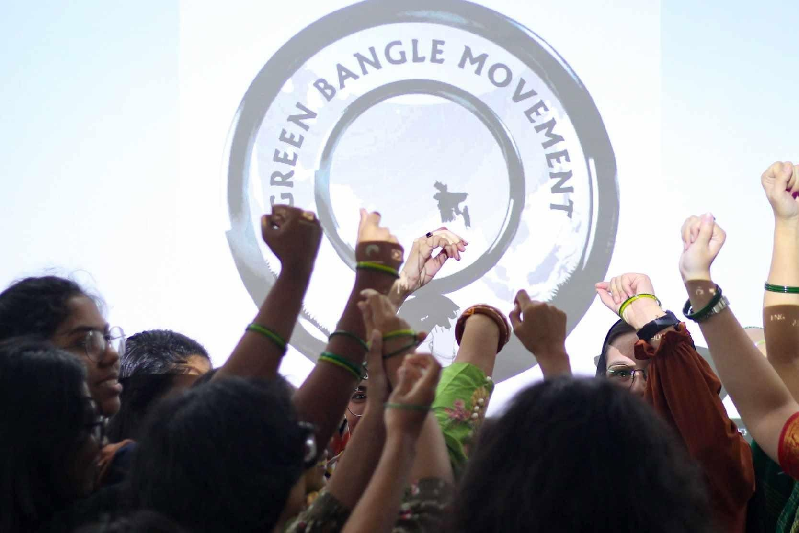

Phase 1 · Awareness
🌴 Palmyra Fruit Festival
Celebrating local knowledge and green culture with students, faculty, and community members. A celebration of indigenous plants and biodiversity protection.


Women for a Green World – A student-led initiative bridging science, women's empowerment, and coastal ecosystem restoration
Born from a simple question: what if coastal protection, women's work and climate education could be woven into the same circle?
Starting from a university campus and spreading into nearby coastal areas, GBM brings students, women and local leaders together around nurseries, mangroves and palmyra palms. The "bangle" in our name carries memory — of women's hands, shared labour and everyday strength.
Our green bangles are living ones: rings of trees, shorelines of care, and networks of women who hold communities through uncertainty.

Founder & Lead Mentor, Green Bangle Movement
Director of Environmental Sciences Program
Asian University for Women
With a lifelong passion for sustainable development, traditional ecological knowledge, and community-centered innovation, Dr. Selvakumar envisioned the Green Bangle Movement as a bridge between science, women's empowerment, and ecological restoration.
His leadership has shaped GBM into a community-driven initiative rooted in hope, resilience, and hands-on environmental action. Through Dr. Selvakumar's vision, GBM continues to empower women, restore coastal ecosystems, and build climate-resilient communities across Bangladesh.
Principles that guide every action and initiative
Protecting and restoring coastal ecosystems, mangrove forests, and native species for long-term resilience.
Empowering women through skills, knowledge, and economic opportunities in environmental stewardship.
Building awareness and capacity through workshops, training, and hands-on learning experiences.
Collaborating with local communities, students, and organizations for grassroots environmental action.
Creating economic opportunities through eco-enterprises and sustainable resource management.
Building adaptive capacity and protecting vulnerable coastal communities from climate impacts.
Milestones of impact, growth, and community transformation
Celebrating local knowledge and green culture with students, faculty, and community members. A celebration of indigenous plants and biodiversity protection.
Empowering young women with storytelling skills to amplify green voices and climate advocacy in their communities.


Women from local communities received training in sapling care, soil preparation, and nursery management, creating new livelihood opportunities.


Students and volunteers planted mangroves at vulnerable coastal areas, supporting erosion control, biodiversity recovery, and climate resilience.


Planting climate-smart heritage trees known for heat resilience, deep roots, and cultural significance across the region.


Young volunteers immersed in planting and soil work, building connection with the land and commitment to climate resilience.



Native species planted across degraded landscapes, stabilizing slopes and restoring habitats in vulnerable regions.


Volunteers spread green hope through communities, encouraging families to care for trees and build living bonds with nature.


Be part of a community-driven initiative that empowers women, restores ecosystems, and builds climate resilience. Together, we can create lasting change.
Get Involved